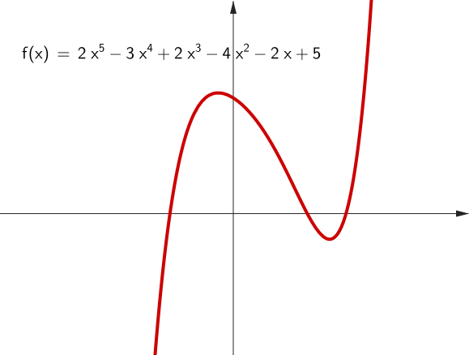
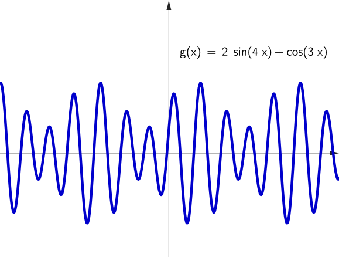
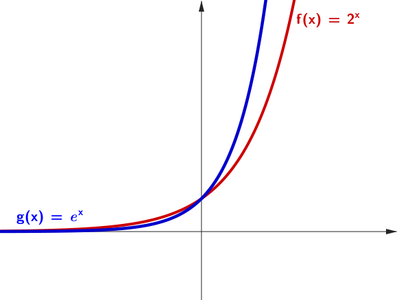
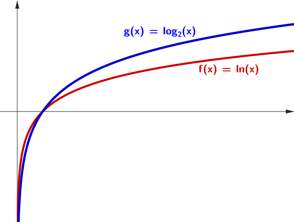

Linear Algebra
&
Engineering Mathematics 1
Week 12 - Functions
Elementary functions
Polynomials
Trigonometric functions
Exponentials & Logarithms
|  |  |
|---|
🚀 Motion of Objects/Particles Affected by Gravity
$y(x) = \ds \frac{g}{2u^2} x^2+\frac{v}{u}x$
☕️ Law of Cooling & 🧫 Population Growth

|

|
| \(T(t)=\left(T_0-T_m\right) e^{-kt} + T_m\) | $\ds P(t) = \frac{\theta P_0 e^{rt}}{\theta-P_0+P_0e^{rt}}$ |
🔬 Hooke's Law (Spring Force)
Force needed to stretch a spring:
\[ F(x) = kx \]
- Linear function
- \( x \): displacement in meters
- \( k \): spring constant (stiffness)
Used in physics, biomechanics, engineering.
🔬 Hooke's Law (Spring Force)
The undamped spring
Use mouse to drag mass and release.
$x(t) = A \sin \left(\omega t \right)$
🔬 Hooke's Law (Spring Force)
The undamped spring
🔬 Hooke's Law (Spring Force)
Damped spring. Use mouse to drag mass and release.
📊 Linear Regression
Predicting height from age: Suppose we collect data from children aged 2 to 13 and record their heights.
📊 Linear Regression
Predicting height from age:
The data points suggest a linear trend:
\[ h(a) = 6.58a + 70.36 \]
📈 Linear Regression
Predicting height from age:
The data points suggest a linear trend:
\[ h(a) = 6.58a + 70.36 \]
- \( a \): age in years
- \( h(a) \): predicted height in cm
- Slope \( 6.58 \): average growth per year
This line is the line of best fit — found using linear regression.
Polynomial Regression
$y = a_0 + a_1x + a_2x^2 + \cdots + a_nx^n + \epsilon$
We look for a least squares polynomial function of best fit.
💊 Medicine in the Body
Drug concentration decreases over time:
\[ C(t) = C_0 e^{-kt} \]
- Exponential decay
- \( C_0 \): initial concentration
- \( k \): decay constant
Models how the body metabolizes medicine.
💊 Medicine in the Body
\[ C(t) = 100 e^{-0.3t} \]
This is a classic example of exponential decay, useful in pharmacology for understanding how a drug's concentration diminishes after administration.
Trigonometric functions: Waveform Analysis
Author: Lucas V. Barbosa
Trigonometric functions & Complex Numbers 🤯
Discrete Fourier Transform
Trigonometric functions: Procedural Landscape Generation
\[ f(\mathbf{x}) = \sum_{i=0}^{N-1} A_i \cdot \left[\cos\left(2\pi \, \mathbf{k}_i \cdot \mathbf{x} + \phi_i\right) + \sin\left(2\pi \, \mathbf{k}_i \cdot \mathbf{x} + \theta_i\right)\right] \]
Combined with Linear Algebra
to visualise the 3D surface! 🤯
Computer Graphics & Art
Computer Graphics & Art
|
|
$f(x) = \sqrt{6^2-x^2}$
$g(x) = 2 + 2 \sin(\text{floor}(x-t) 4321)$ $h_k(x) = \dfrac{-5}{k}+\dfrac{2}{5}, $ $\qquad k=0,1,\ldots, 10$ |
Elementary functions
| Function | Expression |
|---|---|
| Polynomials | \(a_nx^n + a_{n-1}x^{n-1}+\cdots a_1 x + a_0\) |
| Trigonometric | \(\sin x, \cos x, \tan x\) |
| Inverse Trigonometric | \(\arcsin x, \arccos x, \arctan x\) |
| Exponentials | \(e^x,\; b^x\) |
| Logarithms | \(\ln x, \;\log_b(x)\) |
| Hyperbolic | \(\sinh x, \cosh x, \tanh x\) |
| Inverse Hyperbolic | \(\text{arcsinh}\, x, \text{arccosh}\, x, \text{arctanh}\, x\) |
| Absolute value | \(|x|\) |
| Square root | \(\sqrt{x}\) |
Found Functions
Time in a Bottle by Jim Croce
Problem 1
For each equation below, determine whether it represents a function. If it does, identify its domain and range.
- \( y^3 = x \)
- \( y^4 = x \)
- \( y = \tan(\alpha) \)
- \( y = 4 \)
Problem 1
For each equation below, determine whether it represents a function. If it does, identify its domain and range.
- \( y^3 = x \)
- \( y^4 = x \)
Problem 1
For each equation below, determine whether it represents a function. If it does, identify its domain and range.
- \( y = \tan(\alpha) \)
- \( y = 4 \)
Problem 2
A weight is oscillating on the spring. The equilibrium position of the object is $x=2m,$ the amplitude of the oscillations is $0.2 m.$ If we look at the object's oscillations, it will be in the equilibrium position at times $t=0s,$ $t=2s,$ $t=4s,$ $t=6s,\ldots.$ What is the equation describing position of the object in time?
Problem 3
Sketch the following functions:
-
The number of radioactive nuclei versus time, assuming the initial number is
100,000 on day 0 and it halves every 6 days on average.
-
The velocity of a falling ball, assuming it starts from rest and its velocity
increases by 9.81 m/s every second (i.e., constant acceleration due to gravity).
- \( f(x) = \left\{\begin{array}{rl}-1, & x\lt 0 \\ x^2, & 0\leq x\lt 2\\ x, & 2 \leq x \end{array}\right. \)
Problem 3
Sketch the following functions:
-
The number of radioactive nuclei versus time, assuming the initial number is
100,000 on day 0 and it halves every 6 days on average.
Problem 3
Sketch the following functions:
-
The velocity of a falling ball, assuming it starts from rest and its velocity
increases by 9.81 m/s every second (i.e., constant acceleration due to gravity).
Problem 3
Sketch the following functions:
-
\(
f(x) = \left\{\begin{array}{rl}-1, & x\lt 0 \\ x^2, & 0\leq x\lt 2\\ x, & 2 \leq x
\end{array}\right.
\)
Problem 4
Sketch the following functions:
- $f_1(x)= 2\sin(3x)$
- $f_2(x)= 4\cos(2x)-1$
- \(f_3(x) = 2e^{-3x}\)
- $f_4(x) = x^2-x-2 $
- $f_5(x) = (x+1)x(x-1)$
Problem 5
Find the inverse of each of the following functions:
- $f_1(x)= 2\sin(3x)$
- $f_2(x)= \dfrac{x}{x+1}$
- \(f_3(x) = 2e^{-3x}\)
- $f_4(x) = x^2-x-2 $
Are the inverse functions actually functions (i.e., do they pass the vertical line test)? Can you easily plot the inverse functions?
Problem 5
Find the inverse of each of the following functions:
- $f_1(x)= 2\sin(3x)$
Are the inverse functions actually functions (i.e., do they pass the vertical line test)? Can you easily plot the inverse functions?
Problem 5
Find the inverse of each of the following functions:
- $f_2(x)= \dfrac{x}{x+1}$
Are the inverse functions actually functions (i.e., do they pass the vertical line test)? Can you easily plot the inverse functions?
Problem 5
Find the inverse of each of the following functions:
- \(f_3(x) = 2e^{-3x}\)
- $f_4(x) = x^2-x-2 $
Are the inverse functions actually functions (i.e., do they pass the vertical line test)? Can you easily plot the inverse functions?
Problem 6
Consider the following functions: $f(x) = 2x,$ $g(x) = x^2+1 $ and $h(x)= e^{\sqrt{x}}.$ Find
- $f\bigg(g\big( h\left(x\right) \big)\bigg)$
- $g\bigg(h\big(f(x) \big)\bigg)$
- $h\bigg(f\big( g(x) \big)\bigg)$
Neural Networks